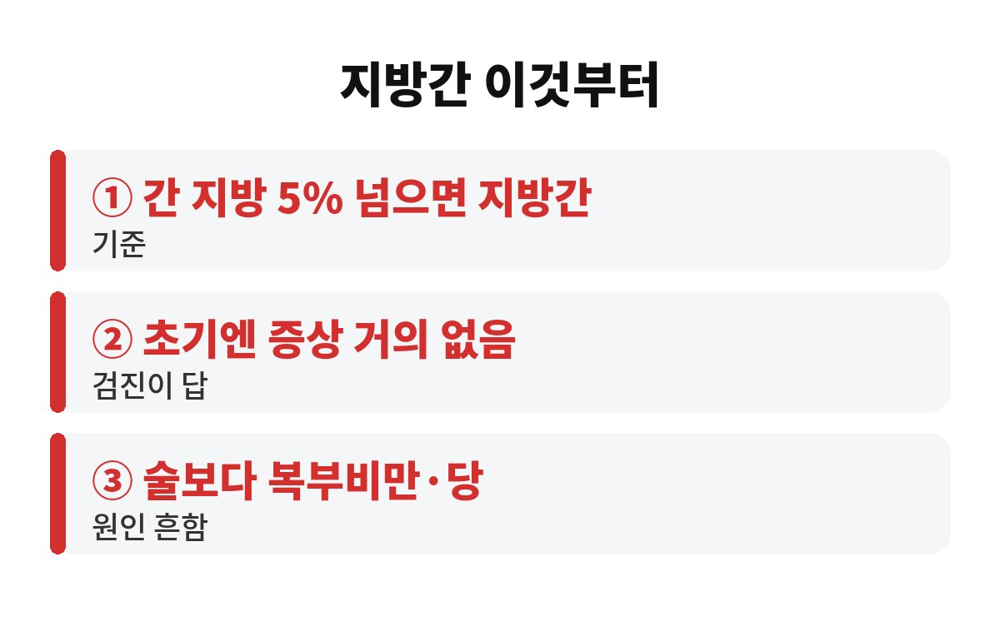
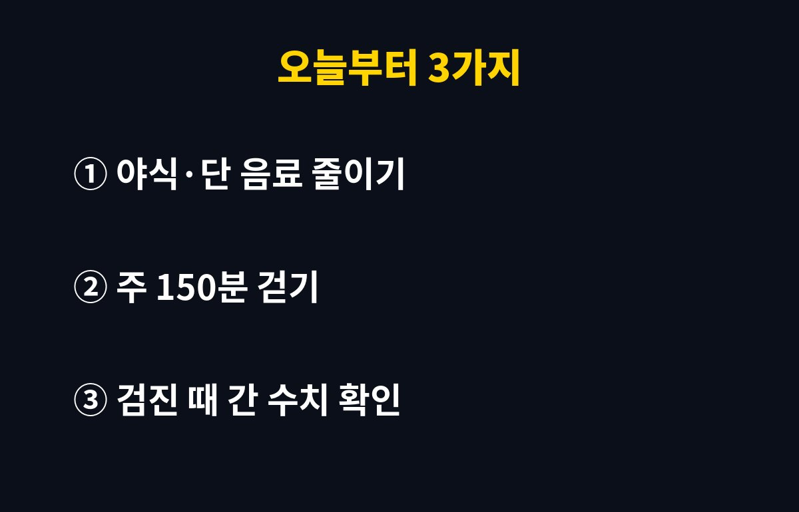

지방간 초기 증상은 사실 거의 없고, 간세포의 5% 이상에 지방이 쌓이면 지방간으로 봐요. 술은 거의 안 마시는데 배만 나온 40대라면, 왜 이게 더 위험할 수 있을까요?
"나는 술 안 하니까 괜찮겠지" 하고 넘어가는 분이 정말 많아요. 그런데 요즘 지방간은 술보다 먹는 습관과 살이 더 큰 원인인 경우가 많거든요. 오늘 쉽게 풀어드릴게요.
네, 대부분 그래요. 간은 '침묵의 장기'라고 불릴 만큼 참을성이 강해서, 꽤 망가질 때까지 티를 잘 안 내요. 그래서 지방간 초기 증상을 몸으로 느끼고 병원에 가는 경우는 드물어요.
가끔 이런 신호가 있긴 해요. 이유 없이 피곤하거나, 오른쪽 윗배가 묵직하거나, 식후에 더부룩한 느낌이 오래가는 거예요. 다만 이건 피로나 소화불량이랑 구분이 안 돼서 대부분 그냥 지나가죠.
그래서 가장 확실한 방법은 건강검진이에요. 혈액검사의 간 수치(AST, ALT)와 복부 초음파가 힌트를 줍니다.

맞아요. 술과 상관없이 생기는 지방간을 '비알코올성 지방간'이라고 하는데, 요즘엔 이쪽이 훨씬 흔하다고 알려져 있어요. 원인은 대체로 복부비만, 당뇨 전단계, 높은 중성지방 같은 대사 문제예요.
특히 단 음료, 과자, 야식처럼 당이 많은 음식이 간에서 지방으로 바뀌어 쌓이기 쉬워요. 밥은 적게 먹는데 믹스커피와 과일주스를 달고 산다면 한 번쯤 돌아보셔야 해요.
체중이 크게 안 늘었어도 배만 나오는 '내장지방형' 체형이라면 더 신경 써야 해요. 옷 사이즈보다 허리둘레가 중요한 이유죠.
초기에는 식습관과 운동으로 충분히 되돌릴 수 있어요. 문제는 방치할 때예요. 지방이 쌓인 채로 염증이 생기면 지방간염으로 넘어가고, 오래되면 간이 딱딱해지는 섬유화까지 갈 수 있어요.
또 지방간은 간에서 끝나지 않아요. 당뇨, 고지혈증, 심혈관 질환과도 연결되는 경우가 많아서, '간 건강 신호등'이 아니라 '온몸 대사 경고등'으로 보시는 게 맞아요.
| 구분 | 내용 |
| 지방간 기준 | 간세포의 5% 이상 지방 축적 |
| 초기 증상 | 거의 없음, 피로·더부룩함 정도 |
| 확인 방법 | 간 수치 혈액검사, 복부 초음파 |

거창한 건 필요 없어요. 첫째, 단 음료와 야식부터 줄여보세요. 둘째, 주 150분 정도 빠르게 걷기 같은 유산소 운동을 꾸준히 해보세요. 셋째, 체중의 5~10%만 줄여도 간의 지방이 눈에 띄게 줄어든다고 알려져 있어요.
그리고 검진표의 AST, ALT 수치를 꼭 확인하세요. 정상 범위를 살짝 넘었다면 '조금 높네' 하고 넘기지 말고, 다음 검진 때 비교할 수 있게 사진으로 남겨두는 것도 좋은 방법이에요.
하나 더 말씀드리면, 갑자기 굶는 다이어트는 오히려 간에 부담을 줄 수 있어요. 한 달에 몇 킬로씩 급하게 빼기보다, 한두 달에 걸쳐 천천히 줄이는 쪽이 간에도 몸에도 훨씬 안전하다고 알려져 있어요. 건강기능식품이나 간에 좋다는 즙을 챙겨 드시는 분도 많은데, 그 돈과 시간을 걷기와 식단에 쓰는 게 지방간에는 훨씬 효과적이에요.
또 가족력이 있거나 당뇨 전단계, 고지혈증 진단을 받았다면 검진 주기를 더 짧게 가져가는 게 좋아요. 1년에 한 번 검진을 받더라도, 간 수치가 해마다 어떻게 변하는지 비교해 보면 내 몸의 흐름이 보이거든요. 숫자가 조금씩 올라가는 중이라면 아직 되돌릴 수 있는 시기라는 뜻이니 오히려 다행이에요.
마지막으로 수면도 은근히 중요해요. 늦게 자고 야식을 먹는 패턴이 반복되면 호르몬 균형이 깨져 내장지방이 더 쉽게 쌓여요. 저녁은 잠들기 세 시간 전에 마무리하는 것만 지켜도 달라지는 분들이 많아요.
지방간 초기 증상이 없다는 건 안심해도 된다는 뜻이 아니라, 숫자로 확인해야 한다는 뜻이에요. 여러분은 마지막으로 간 수치를 본 게 언제였나요? 댓글로 알려주세요.
도움이 되셨다면 구독해 주세요. 매일 생활 건강 정보를 쉽게 풀어드릴게요.
※ 본 글은 일반적인 건강 정보이며 진단·치료를 대신하지 않습니다. 증상이 있거나 검진 수치가 걱정되면 반드시 전문의 상담을 받으세요.